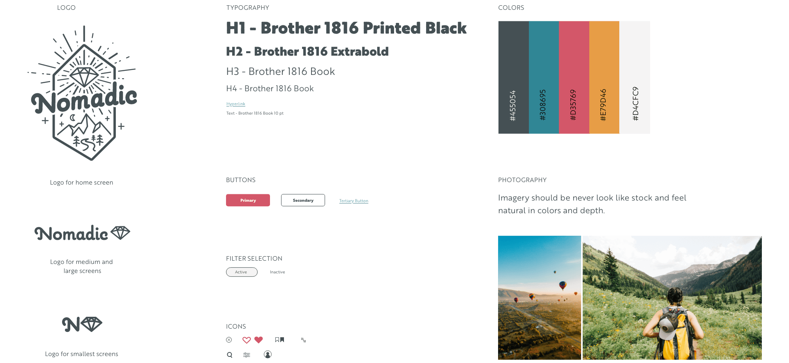
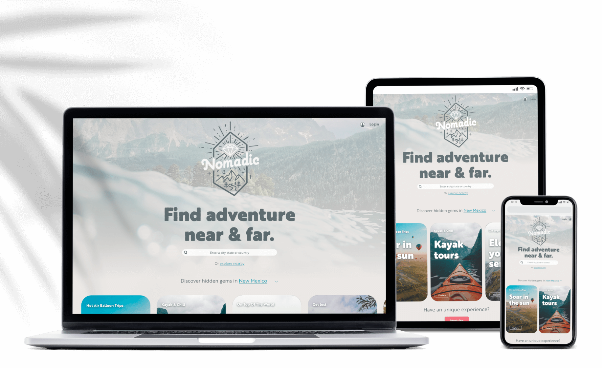

Sketching & Planning
User Flow
This is my final user flow adjusted for all the insights and pivots
I made throughout the user research phase.
Low Fidelity Wireframes
Using the Crazy Eights method I created my initial low fidelity
wireframes and marked which layouts would work best for the app.

Test
After sketching the wireframes, I created a low fidelity prototype to
test on my potential users. I recreated some of the screens to make
sure the elements were clear and legible.
Insights & Pivot
I found that users were not clear on the original concept for the
hidden gems, which was a curated list of top rated hiking trails
around the world called “Explore Worldwide”. I decided to rework
“Explore Worldwide into “Hidden Gems” which would allow hikers to
submit places that stood out to them on their hikes for other hikers
to see. This “hidden gem” feature would allow the website to stand
out as a more community based trail finder while also providing a
straightforward way for users to find trails in their area and
abroad.

Mid Fidelity Wireframes

Design & Brand
Mood Boards
I selected inspiration for the design of Nomadic to have a
“retro-modern” look that would appeal to outdoors-y folks and still
have a human touch which is central to the concept of this
app.
Style Guide

Final UI & Key Features
Responsive

Search & Filter for Hiking Trails Near and Abroad

Get Directions
Vote on and Save Hidden Gems
Conclusion
Nomadic was a major project that really helped refine my UX
research process as well as refine my synthesis skills from my
research. A key take away was not to assume what users need but
ask and determine what would be best service users. In my process
I ended up pivoting this project twice but gained a better
understanding of users and user needs.